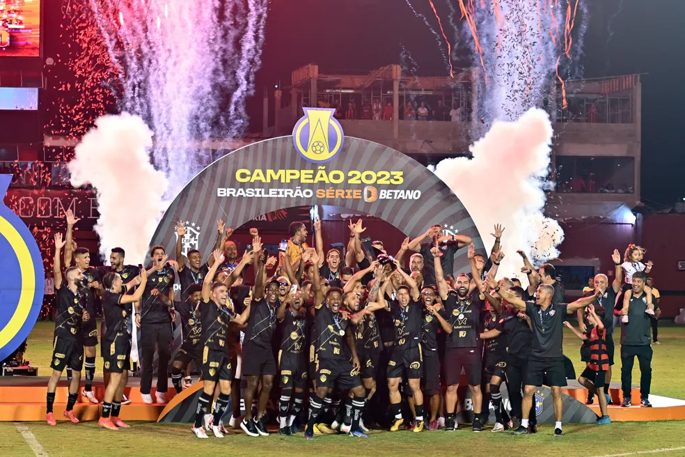

Aqui, você encontra tudo sobre o campeonato que movimenta milhões de torcedores e revela talentos incríveis. Nossas atualizações incluem análises de jogos, entrevistas exclusivas, estatísticas detalhadas e muito mais. Fique por dentro das últimas novidades dos clubes, dos jogadores em destaque e das principais disputas da competição. Junte-se a nós para acompanhar cada lance emocionante e torcer pelo seu time do coração!
PRINCIPAIS VENCEDORES:
Os maiores campeões ficaram com a taça duas vezes:
Botafogo (2015 e 2021);
Paysandu (1991 e 2001);
Palmeiras (2003 e 2013);
Bragantino (1989 e 2019);
Goiás (1999 e 2012);
Coritiba (2007 e 2010);
América-MG (1997 e 2007).
Tabela: